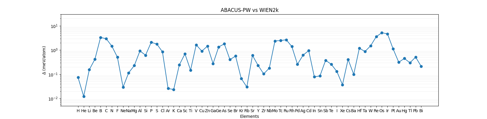

Test date: 2023-07-06.
Version : v3.2.5(42c8a8a (Wed Jul 5 10:20:16 2023 +0000))
Delta test is an error analysis method to reflect the difference between two DFT implementations. For delta test, please refer to https://doi.org/10.1080/10408436.2013.772503.
Below is the results between ABACUS PW basis and WIEN2K. The reference WIEN2K data is from: https://github.com/molmod/DeltaCodesDFT.
